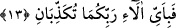

13. O halde Rabbinizin nimetlerinden hangisini yalanlayabilirsiniz?
Bu âyet-i kerîmedeki hitap, onuncu âyet-i kerîmede geçen En’âm kelimesinin
kapsamına aldığı insan ve cinleredir. Onun için “tükezzibân” fiili tesniye olarak
gelmiştir. “Ey insan ve cin, sizin de hesabınızı ele alacağız. (er-Rahmân, 55/31) âyet-i
kerîmesinde iki topluluk anlamındaki es-Sekalân kelimesiyle dile getirecektir. Yine,
“Allah insanı, pişmiş çamura benzeyen bir balçıktan yarattı. Cinleri öz ateşten
yarattı” (er-Rahmân, 55/14-15) âyet-i kerîmelerinde geçen ins/insan ve cin’in babaları
durumundaki “”insân” ve “cân” kelimelerinin zikredilmesi de bu âyet-i kerîmedeki
hitabın bu iki topluluk olduğunu gösterir.
“Âlâ” kelimesi, Kamus’ta da ifâde edildiği gibi, “nimetler” anlamındadır.
Bahru’l-ulûm’da belirtildiğine göre, “el-Âlâü”, insan ve cinlerden iki topluma
ulaşan, görünen ve görünmeyen nimetlerdir. Bu târiften anlaşılmaktadır ki, el-Âlâ,
yalnız görünen nimetler,
/el-Niamâü de görünmeyen nimetlerdir, görüşü yanlıştır.
Doğrusu, gemi anlamındaki fülk ve süfün, arslanlar anlamındaki üsûd ve lüyûs
kelimeleri gibi âlâ ve niamâ kelimeleri lafızları değişik, mânâları bir (müteradif)
kelimelerdir.
Et-Te’vîlâtü’n-Necmiyye adlı eserde denilmiştir ki, el-Âlâ, görünen nimetler, Niamâ
görünmeyen nimetlerdir. Birbirini takib ederek gelen âyetler de bu fikri
doğrulamaktadır. Çünkü, her nimet zâhir ehline göre görünen nimettir.
Nimetleri yalanlamalarının anlamı ise, o nimetleri inkâr etmektir. Âyet-i kerîme’de
küfür, yalanlama kelimesi ile ifâde edilmiştir. Çünkü, sayılan nimetlerin îman ve şükrün
vâcib olduğunu göstermesi, îman ve şükre bir tanıklıktır. İnsan ve cinlerin bu nimetleri
inkâr etmeleri şüphesiz ki onları inkâr etmektir. Bütün bu açıklamalardan sonra mânâ
şöyle olur: Her biri hakkı dile getirdiği, doğruya şâhidlik ettiği halde, fertlerden hangi
fert Rabbinizin ve sâhibinizin bu nimetlerinden hangisini inkâr edebilir? Âyet-i
kerîmedeki istifham ikrar ettirmek içindir. Yâni bu nimetleri ikrar, onlardan dolayı
Allah’a şükretmenin vâcib olduğunu kabul etmeğe zorlamak içindir.
Câbir (r.a.)’den rivâyet edildiğine göre, şöyle demiştir: Rasûlullah (s.a.) bize Rahmân
sûresini sonuna kadar okudu ve “Ne oluyor? sizi sükût içinde görüyorum, şüphesiz ki
cinler, nimetleri inkâr ettiklerini sizden daha iyi red etmişlerdir. Onlara ne zaman “O
halde Rabbinizin nimetlerinden hangisini yalanlaya bilirsiniz?” âyetini okudu isem
hemen, Ey Rabbimiz! senin nimetlerinden hiç birini yalanlamadık. Sonsuz hamd ü
senâlar sana mahsustur” dediler, buyurdu.[169]
Bahru’l-ulûm’da denilmiştir ki: Bu âyet-i kerîme apaçık göstermektedir ki Allah
“âlâ” kelimesiyle görünen ve görünmeyenlerine şâmil olmak üzere hiç bir şey ile
kayıtlamadan mutlak nimetleri kasd etmiştir. Mütereddid bazı kimselerin dedikleri gibi
yalnız görünen nimetler kasdedilmiş değildir.